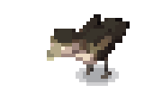
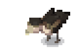
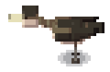
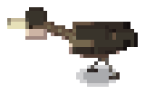

Carrion vulture
A creature of Milecairn.
Carrion vulture is a creature of Milecairn.
Locations
In the game
In the game the Carrion Vulture is level 13–16, normal. It is found in The Low Toll and Skerry Point. It can drop Carter's Bracers (2%), Causeway Boots (2%) and rarely one of 8 rare items.
Quests
Quests that ask for it: Vultures over the Swell.
Gallery







